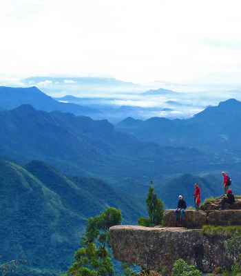

About Kodaikanal
Princess of the Hill Station !
Kodaikanalis a hill station which is located in Dindigul district in the state of Tamil Nadu, India. Its name in the Tamil language means "The Gift of the Forest". Kodaikanal is referred to as the "Princess of Hill stations" and has a long history as a retreat and popular tourist destination.
Kodaikanal was established in 1845 as a refuge from the high temperatures and tropical diseases of the plains.Much of the local economy is based on the hospitality industry serving tourism. As of 2011, the city had a population of 36,501.
